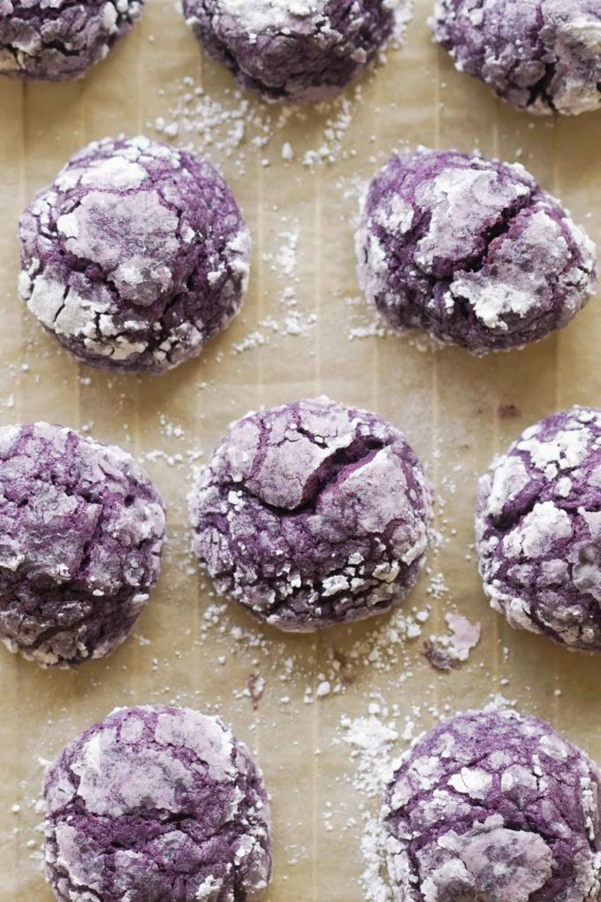

Home
Ube Cookies

After eating some
chicken milanese or some
spaghetti, you might want a little treat to
end off the meal. These ube cookies are perfect for that, they have a
unique sugar cookie taste and are easy to make!
Ingredients
- 1 cup all all-purpose flour
- 1/2 cup glutinous rice flour
- 1 tsp baking powder
- 1/4 tsp salt
- 1/2 cup unsalted butter
- 1/4 cup white granulated sugar
- 1/4 cup dark brown sugar
- 1 large whole egg
- 1 large egg yolk
- 8 tbsp ube puree or ube halaya jam
- 1 tsp ube extract
- 1/4 cup powdered sugar
Steps
-
In a small mixing bowl add all dry ingredients (flours, baking powder,
salt) and whisk to combine. Set aside
-
In a larger mixing bowl for wet ingredients, combine the butter,
granulated sugar, and brown sugar until fully incorporated
-
Add the eggs into the wet ingredient bowl. Then, add the ube puree and
ube extract. Combine until the dough mixture color is homogenous
-
Slowly add dry ingredients into the wet ingredients while mixing until
incorporated
- Chill the bowl of dough in the freezer for about 20 minutes
-
Preheat oven to 350 °F. Line a baking sheet with parchment paper and set
aside
-
Remove dough from the freezer and scoop about 1 tablespoon of dough and
roll into a ball
-
Roll the ball of dough in a bowl of powdered sugar until it's well
coated-I roll it around until it's completely white on the outside.
Place dough on a baking sheet and give one-inch space between each
cookie
-
Bake for 12-15 minutes or until the cookies are firm. Remove from the
oven and place the cookies on a cooling rack for five minutes. Serve and
enjoy